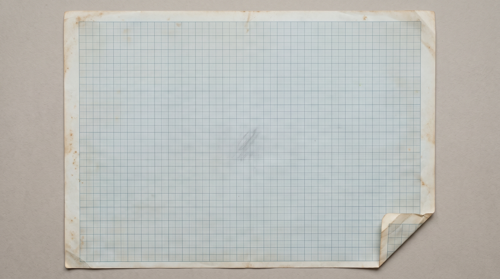
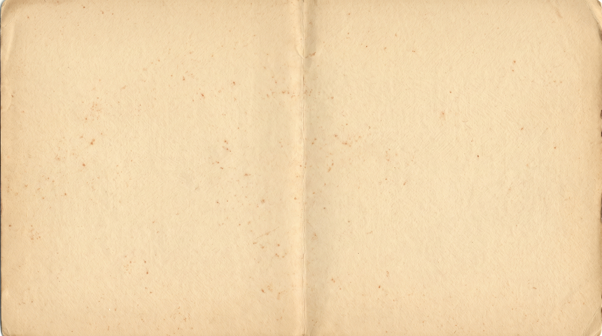

MOMENTUM

Fig. I — Philadelphia
MOMENTUM
SIGNAL
The month in local demand
needmomentum.com

Momentum Digital · Philadelphia
Bulletin 01
Fig. I — Local demand
Philadelphia · 39.95° N, 75.16° W
“roofer near me”01
Map pack02
AI answers03
Organic · Paid · GBP04
MOMENTUM
Local searchPhiladelphia